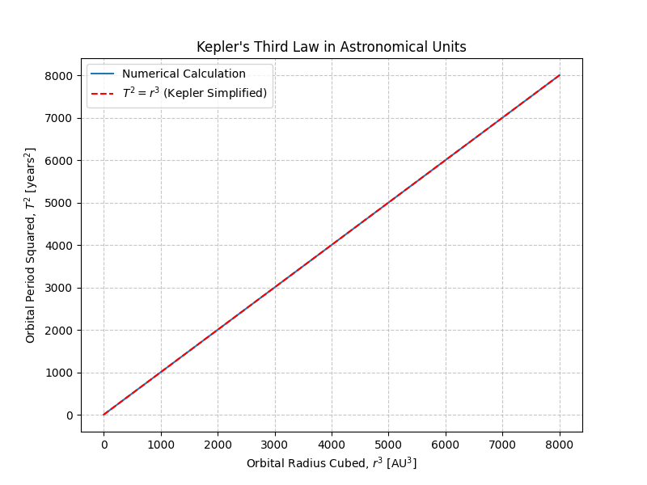
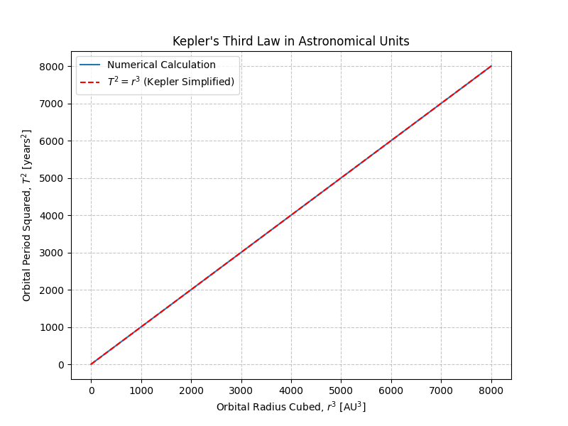

Problem 1: Orbital Period and Orbital Radius
Motivation
Kepler’s Third Law reveals a profound connection between the time it takes a celestial object to complete an orbit and its distance from the object it orbits. It’s a cornerstone in celestial mechanics, useful for estimating distances, predicting motion, and determining masses of astronomical objects. This relationship, when derived from Newtonian gravitation, also helps bridge classical and modern physics.
1. Theoretical Derivation
Consider a small object of mass \( m \) orbiting a large central mass \( M \) in a circular orbit of radius \( r \) and period \( T \).
Gravitational Force Provides Centripetal Force
Canceling \( m \) and rearranging:
Substitute \( v = \frac{2\pi r}{T} \):
✅ Kepler’s Third Law for Circular Orbits: $$ T^2 \propto r^3 $$
This shows the square of the orbital period is proportional to the cube of the orbital radius.
2. Astronomical Implications
- Used to calculate planetary distances when the period is known (and vice versa).
- Allows estimation of the mass of central objects (e.g., planets, stars).
- Critical in satellite deployment, planet hunting, and galactic dynamics.
3. Real-World Examples
Example 1: The Moon Orbiting Earth
Given: - Orbital radius: \( r = 3.84 \times 10^8 \, \text{m} \) - Mass of Earth: \( M = 5.972 \times 10^{24} \, \text{kg} \) - Gravitational constant: \( G = 6.67430 \times 10^{-11} \, \text{m}^3\,\text{kg}^{-1}\,\text{s}^{-2} \)
Using the orbital period formula:
This matches the observed sidereal period of the Moon.
Example 2: Planetary Orbits in the Solar System
When using astronomical units (AU) for distance and years for time, Kepler’s Third Law simplifies to:
T² = r³
where
- T is the orbital period in years
- r is the orbital radius in AU
For example:
-
Earth:
r = 1 AU ⇒ T = 1 year -
Mars:
r = 1.52 AU ⇒ T² = (1.52)³ = 3.51 ⇒ T = √3.51 ≈ 1.87 years
This matches well with the actual orbital period of Mars.
4. Python Simulation and Visualization
import numpy as np
import matplotlib.pyplot as plt
# Constants
G = 6.67430e-11 # m^3/kg/s^2
M = 1.989e30 # Mass of the Sun in kg
# Orbital radii (in meters)
radii = np.linspace(5e10, 3e12, 100) # From 0.33 AU to ~20 AU
# Calculate periods using Kepler's Third Law
periods = 2 * np.pi * np.sqrt(radii**3 / (G * M))
# Plot T^2 vs r^3 to show the linear relationship
plt.figure(figsize=(8, 6))
plt.plot(radii**3, periods**2)
plt.xlabel('Orbital Radius Cubed (r³) [m³]')
plt.ylabel('Orbital Period Squared (T²) [s²]')
plt.title('Kepler’s Third Law: T² vs r³')
plt.grid(True)
plt.show()
 

5. Extension: Elliptical Orbits
For elliptical orbits, Kepler’s Third Law generalizes to:
where
- \( T \) is the orbital period,
- \( a \) is the semi-major axis of the ellipse,
- \( G \) is the gravitational constant,
- \( M \) is the mass of the central body.
The relationship still holds true, making Kepler’s Third Law a powerful tool even beyond circular orbit approximations.
6. Conclusion
Kepler’s Third Law, derived from Newtonian mechanics, elegantly explains the orbital dynamics of planets and satellites. It allows astronomers to deduce distances and masses from simple observations and remains foundational in both theoretical and applied astrophysics.